网络相关命令
|
|
Network Namespace
Docker 网络的底层原理是 Linux 的 Network Namespace
Network Namespace 是 Linux 内核提供的用于实现网络虚拟化的重要功能，它能创建多个隔离的网络空间，每个独立的网络空间内的防火墙、网卡、路由表、邻居表、协议栈都是独立的。
一个 Network Namespece 就代表一个独立的主机，一个容器就对应一个 Namespece，所以一个容器就代表了网络中的一个独立主机
两个Network Namespace虚拟网络可以通过添加虚拟网卡并分配IP来实现联通
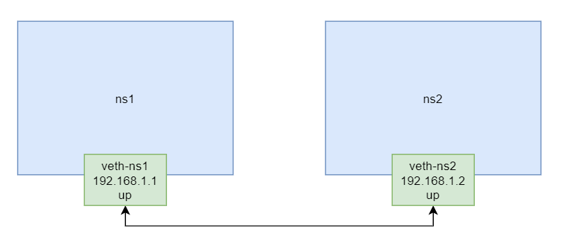
Docker 网络架构
由三个主要部分构成：CNM、Libnetwork 与 Driver
CNM 是规范，Libnetwork 是 CNM 规范的实现，Driver 是 Libnetwork 中不同网络模式的实现
通过调用 Docker 引擎的 API 发出请求，然后由 Libnetwork 做出框架性的处理，然后将请求转发给相应的 Driver
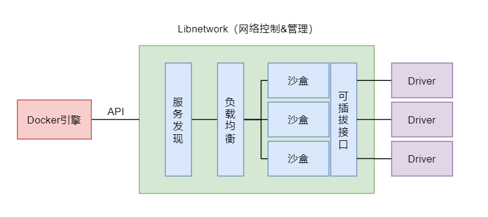
Driver
实现 Libnetwork 定义的 Driver 接口
每种不同的网络类型都有对应的不同的底层 Driver，这些 Driver 负责在主机上真正实现需要的网络功能
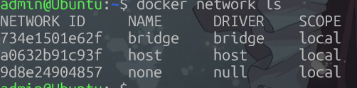
CNM
Container Network Model，容器网络模型，其是一种网络连接的解决方案，提供了设计规范、设计标准
CNM 中定义了 Docker 网络的基础组成要素：沙盒 Sandbox，终端 Endpoint 与网络 Network
| 对象 | 含义 | 对应实现 |
|---|---|---|
| Sandbox（沙箱） | 容器的网络栈隔离环境 | Network Namespace |
| Endpoint（端点） | 网络与沙箱的连接点 | veth pair + 网桥端口 |
| Network（网络） | 一组可相互通信的 Endpoint 集合 | 网桥（docker0 / br-xxxx） |
Libnetwork
Libnetwork 是开源的、由 Go 语言编写的、跨平台的 CNM 的实现
除了实现了 CNM 的三个组件，还实现了本地服务发现、容器负载均衡，以及网络控制层与管理层功能。
bridge 网络
bridge 网络，也称为单机桥接网络，是 Docker 默认的网络模式。加入网络的容器具有独立的 namespace，具有自己独立的网络接口与 IP
该网络模式只能存在于单个 Docker 主机上，其只能用于连接所在 Docker 主机上的容器
bridge 网络模式中具有一个默认的虚拟网桥 docker0 , 在docker里网络名为brige
在创建容器时通过–network 指定要连接到的网络，如果不指定，默认连接到默认的bridge 网络。
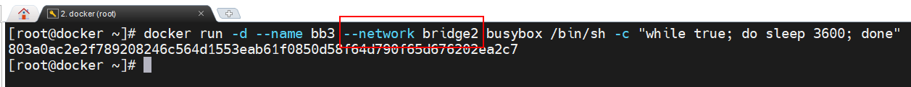
bridge 网桥工作原理
容器与网桥间是通过 veth pair 技术实现的连接，网桥与外网间是通过“网络地址转换 NAT 技术”实现的连接，将通信的数据包中的内网地址转换为外网地址
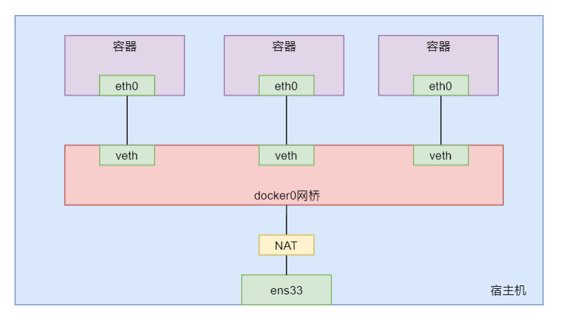
- Network 与 Sandbox 不直接绑定，通过 Endpoint veth pair连接
- 一个 Sandbox 可以有多个 Endpoint，接入多个网络（多网卡容器）
- 同一 Network 内的 Endpoint 默认可自由通信，跨 Network 默认隔离
- 跨主机网络只需让各主机的 Network 逻辑上属于同一网络
容器名称代替IP
生产中容器的 IP 可能会发生变化，但容器名称一般是不会变的。无论容器 IP 如何变化，都将不影响服务与容器的连接
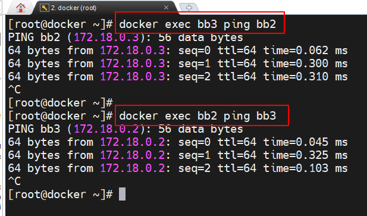
自定义的 bridge 网络，其具有一个特性：该网络上的容器可以通过容器名互 ping。但默认的 bridge 网络是不行的。如果在默认的 bridge 网络上实现通过容器名进行的连接，则需要创建容器时通过–link 选项指定（–link 指定的连接是一种定向连接，是带有指向性与方向性的）
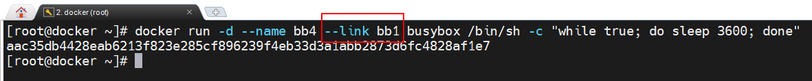
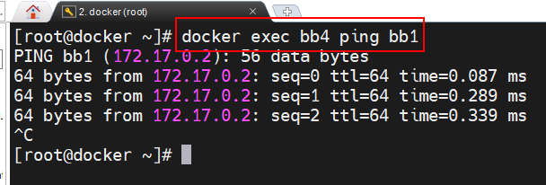
bridge 网络构造示例
构造一个多网络容器示例
从多方面查看网络信息： 宿主机 ip a、网桥 、容器内 ip a、docker network inspect
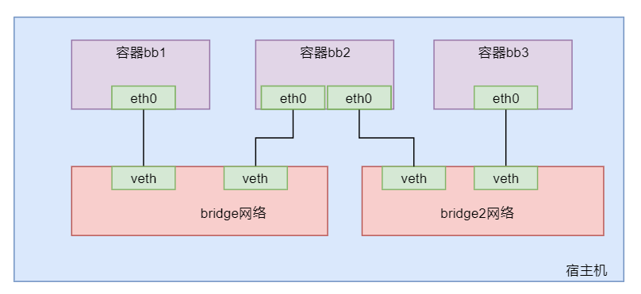
- 通过 docker network create 命令可以创建指定名称与类型的网络
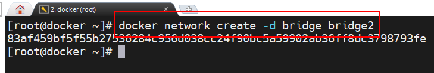
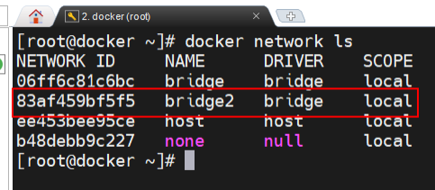
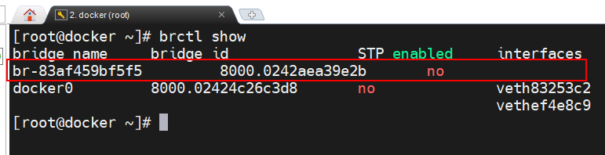
- 创建一个新的容器连接在新建的 bridge2 网络上
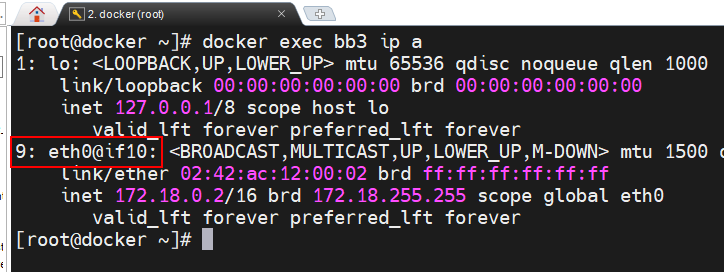
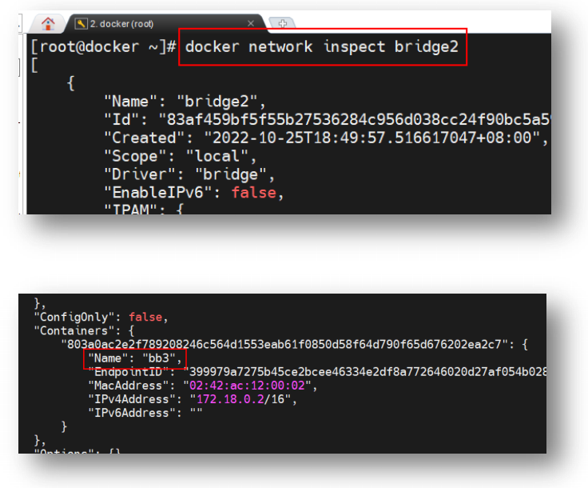
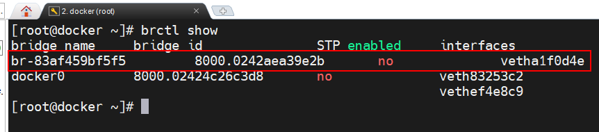
此时查看当前宿主机的网络接口情况，发现多出了两个接口。其中一个为网桥 br-xxx，一个是连接容器的接口 vethxxx@ifn。
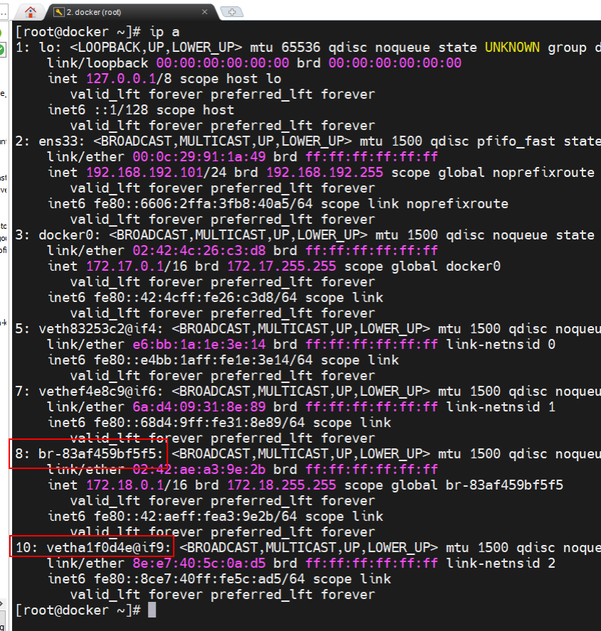
- docker network connect bridge bb3 命令将容器 bb3 连接到默认的bridge网络上
产生结果自行推断
none 网络
none 网络，加入网络的容器具有独立的 namespace，但没有网络接口，没有 IP，没有网关，没有 MAC 地址
在 docker run 命令中，通过–network none 选项指定创建的容器没有网络功能
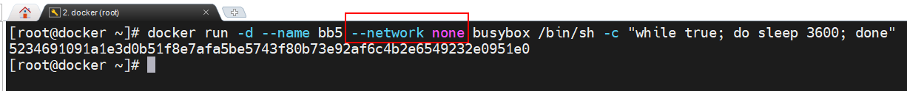
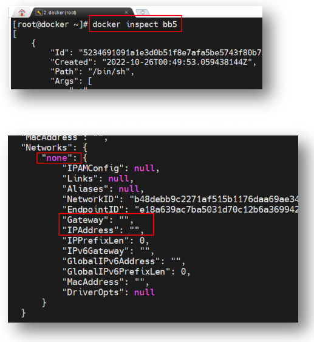
host 网络
host 网络，加入网络的容器没有自己独立的 namespace，与宿主机 host 共用一个 Network Namespace。该网络类型的容器没有独立的网络空间，没有独立的 IP，没有建立内外联通的网络，全部与 host 共用，在宿主机与容器内执行 ip a 命令结果相同
采用 host 网络模式时
- 对于容器中应用程序的 Port 不存在映射
- 在一个宿主机中只能启动一个使用某端口的容器
在 docker run 命令中，通过–network host 选项指定创建的容器为 host 网络
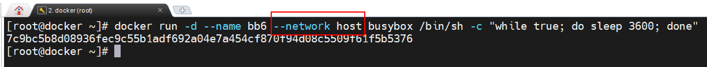
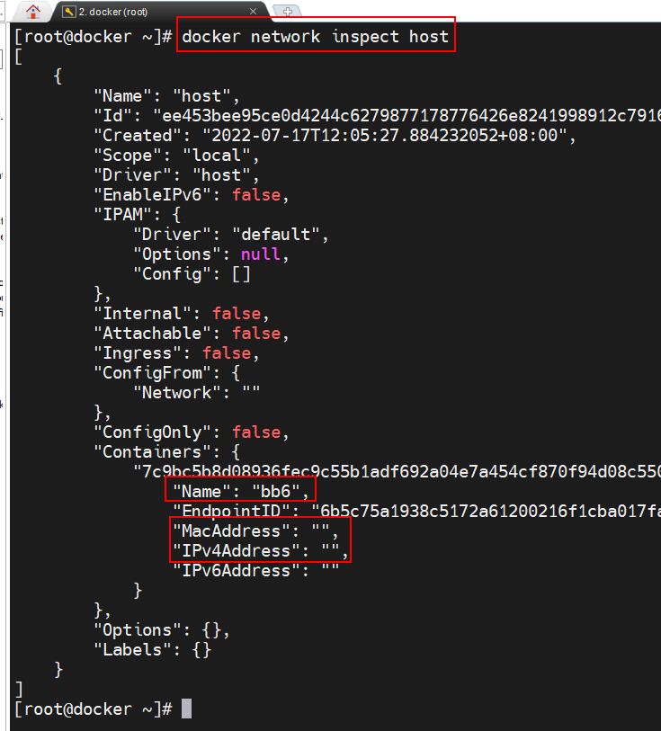